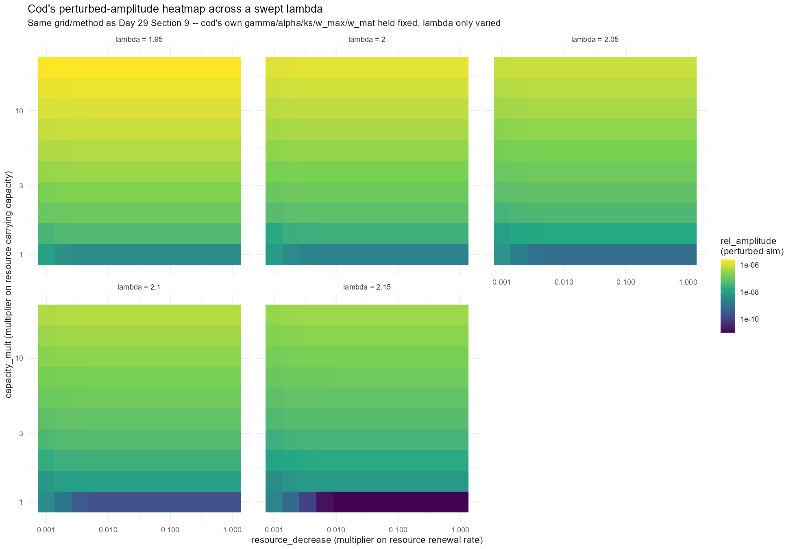
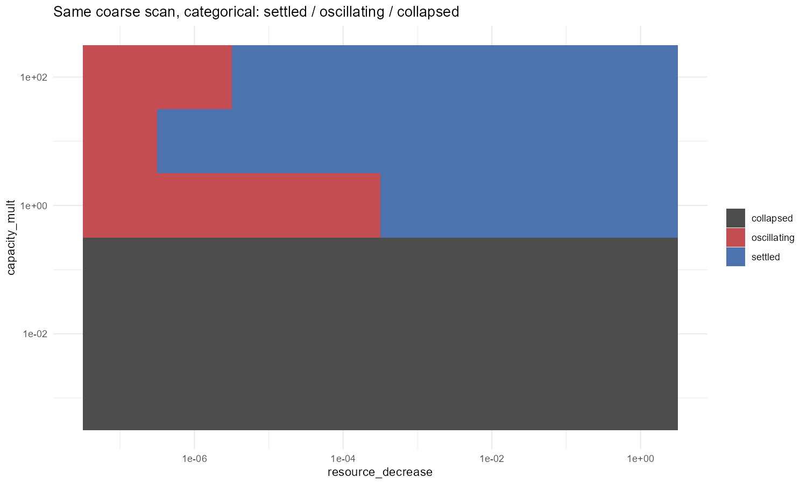

Code
library(mizer)
library(mizerExperimental)
library(dplyr)
library(ggplot2)
library(future)
library(future.apply)
library(scales)
plan(multisession)
dir.create("interesting_plots", showWarnings = FALSE)Day 29 closed with three open threads on cod: investigate the small, likely-transient hot spot in cod’s “bottom left” corner properly; introduce fishing mortality against yield; and sweep cod’s lambda, which every anchovy-template build in this project fixes at 2.05 by convention without ever checking whether cod’s own value matters. Today runs the lambda sweep, widens the corner investigation, adds a much coarser but much wider reconnaissance scan, starts a sweep of mizer’s own q parameter, and - along the way - finds a second bug in the metric Day 29 used to call cod and anchovy juvenile- vs adult-driven.
library(mizer)
library(mizerExperimental)
library(dplyr)
library(ggplot2)
library(future)
library(future.apply)
library(scales)
plan(multisession)
dir.create("interesting_plots", showWarnings = FALSE)cod_params <- readRDS("../cod_params.rds")
resource_limitation_2d_cod <- function(params, resource_decrease, capacity_mult) {
new_rate <- getResourceRate(params) * resource_decrease
new_capacity <- getResourceCapacity(params) * capacity_mult
setResource(params, resource_rate = new_rate, resource_capacity = new_capacity, balance = FALSE)
}
build_cod <- function(resource_decrease, capacity_mult) {
resource_limitation_2d_cod(cod_params, resource_decrease, capacity_mult)
}
make_limit_cycle_sim <- function(params, t_total = 600, effort = 0) {
params@initial_n_pp[] <- params@cc_pp * 0.1
sim_init <- project(params, t_max = 10, dt = 0.1, t_save = 0.2,
progress_bar = FALSE, effort = 0,
method = "predictor-corrector")
idx <- params@w >= 10 & params@w <= 100
last <- dim(sim_init@n)[1]
sim_init@n[last, , idx] <- sim_init@n[last, , idx] / 1e3
project(sim_init, t_max = t_total - 10, dt = 0.1, t_save = 0.2,
progress_bar = FALSE, effort = effort,
method = "predictor-corrector")
}
classify_perturbed_run <- function(sim, window_frac = 0.4) {
bm <- rowSums(getBiomass(sim))
times <- as.numeric(names(bm))
late <- bm[times >= max(times) * (1 - window_frac)]
rel_amplitude <- (max(late) - min(late)) / mean(late)
data.frame(rel_amplitude = rel_amplitude,
perturbed_verdict = if (rel_amplitude > 1e-6) "oscillating" else "settled",
error = NA_character_)
}Same self-contained convention as every script since Day 20: redefined here rather than sourced from 29_experiments.R.
lambda and the Wrong Mental Model Behind ItThe starting idea for today was to reach de Roos & Persson’s oscillatory territory without touching mizer’s own q (the search-volume exponent) directly. mizer’s classic scaling framework ties together the growth-rate exponent, the resource spectrum’s slope, and the search-volume exponent through an identity of the rough shape n = 2 + lambda - q: change lambda, and , so the reasoning went, you’ve effectively moved along the same axis q would, without needing to touch q itself.
That was the wrong mentality. The identity only holds when the rest of the calibration is set up the way the classic scaling derivation assumes it - a single self-similar power-law spectrum, with every other exponent held at the value the identity expects. lambda doesn’t enter this project’s own code that way at all: every build in this project sets kappa from lambda through a completely separate, ad hoc empirical formula (kappa <- a0 * exp(-6.9 * (lambda - 1))), not through the scaling identity. Moving lambda here shifts the background resource spectrum’s overall scale and slope through that formula, which isn’t the same lever the n = 2 + lambda - q identity describes moving. The lambda sweep below still found something real, but it wasn’t a proxy for a q sweep, and the two shouldn’t be read as interchangeable evidence for the same mechanism, which is exactly why q gets swept directly and separately further down.
cod_sp <- cod_params@species_params
cod_gamma <- unname(cod_sp$gamma[1])
cod_alpha <- unname(cod_sp$alpha[1])
cod_ks <- unname(cod_sp$ks[1])
cod_w_max <- unname(cod_sp$w_max[1])
cod_w_mat <- unname(cod_sp$w_mat[1])
cod_w_min <- unname(min(cod_params@w))
lambda_seq <- seq(1.95, 2.15, by = 0.05)
make_cod_with_lambda <- function(lambda, resource_decrease, capacity_mult,
second_order = TRUE, ext_diff = 0.00) {
a0 <- 100
kappa <- a0 * exp(-6.9 * (lambda - 1)) # same formula every anchovy build uses
no_w <- round(log(cod_w_max / cod_w_min) / 0.1)
params <- newSingleSpeciesParams(
species_name = sprintf("cod_lambda_%.2f", lambda),
w_min = cod_w_min, w_max = cod_w_max, w_mat = cod_w_mat,
no_w = no_w, lambda = lambda, kappa = kappa,
alpha = cod_alpha, gamma = cod_gamma, ks = cod_ks
)
given_species_params(params)$D_ext <- ext_diff
params <- setBevertonHolt(params)
default_capacity <- getResourceCapacity(params)
r <- getResourceRate(params) * resource_decrease
cc <- default_capacity * capacity_mult
params <- setResource(params, resource_rate = r, resource_capacity = cc,
resource_dynamics = "resource_semichemostat", balance = FALSE)
if (second_order) second_order_w(params) <- c(flux = "centred", bin_average = TRUE)
params
}
# Reproduces cod's OWN gamma/alpha/ks/w_max/w_mat, not cod_params' full
# calibration (mortality/erepro/R_max untouched) -- same caveat as Day 29
# Section 3's body=cod/rates=cod hybrid.
make_build_cod_lambda <- function(lambda) {
function(resource_decrease, capacity_mult) make_cod_with_lambda(lambda, resource_decrease, capacity_mult)
}
resource_decrease_seq <- exp(seq(log(0.001), log(1), length.out = 12))
capacity_mult_seq <- exp(seq(log(1), log(20), length.out = 10))
lambda_grid_params <- expand.grid(resource_decrease = resource_decrease_seq, capacity_mult = capacity_mult_seq)
# ... perturbed_grid_point()/perturbed_grid_generic() at every
# (resource_decrease, capacity_mult) combo, once per lambda -- same
# pattern as Day 29 Section 9's perturbed_grid_generic(), just parameterised
# over lambda instead of species.
A sharp threshold sits between lambda=2.00 and lambda=2.05 - every prior test of cod-shaped traits in this project (native cod_params across the full grid, the body/rates factorial, capacity_mult extended to 500x, reproduction-level and selective-fishing sweeps) came back completely null, and this is the first lever that actually flips cod into oscillation. It isn’t scattered either: at lambda=1.95 and 2.00, the oscillating points form complete horizontal bands at capacity_mult >= ~10, independent of resource_decrease ,which is the same signature as anchovy’s paradox-of-enrichment collapse from Days 22-24, and max rel_amplitude decreases monotonically as lambda rises from 1.95 to 2.15, so this reads like a continuous approach to a bifurcation rather than a coincidence at one value.However, if you look at the scales, you can see that isn’t the case - the “oscillations” are too small to be something noteworthy, especially if you compare it against the mean biomass.
Every grid this project has used since Day 24 stays inside resource_decrease 1e-3 to 1 and capacity_mult 1 to 20 (or 500 at the very widest). Before refining that window any further, today ran one deliberately coarse (8x6=48 point) reconnaissance pass on native cod_params, no lambda/q substitution, the real, fully-calibrated object, across resource_decrease from 1e-7 to 1 and capacity_mult from 1e-3 (an actively shrunk carrying capacity, never tested before) to 1e2.
broad_resource_decrease_seq <- exp(seq(log(1e-7), log(1), length.out = 8))
broad_capacity_mult_seq <- exp(seq(log(1e-3), log(1e2), length.out = 6))
broad_grid_params <- expand.grid(resource_decrease = broad_resource_decrease_seq,
capacity_mult = broad_capacity_mult_seq)
# At resource_decrease=1e-7 the resource barely renews -- population
# collapse (biomass -> 0) is a real outcome, not just oscillation, and
# rel_amplitude = (max-min)/mean blows up to NaN/Inf under that condition
# (0/0). Each point checks final biomass against a collapse floor
# (1e-6x the run's own starting biomass) and reports "collapsed" as its
# own category rather than letting it masquerade as "oscillating".
broad_scan_point <- function(build_fn, resource_decrease, capacity_mult, t_total = 600) {
p <- build_fn(resource_decrease, capacity_mult)
sim <- make_limit_cycle_sim(p, t_total = t_total)
bm <- rowSums(getBiomass(sim))
times <- as.numeric(names(bm))
late <- bm[times >= max(times) * 0.6]
mean_late_biomass <- mean(late)
collapsed <- mean_late_biomass < bm[1] * 1e-6
rel_amplitude <- if (collapsed) NA_real_ else (max(late) - min(late)) / mean_late_biomass
data.frame(resource_decrease = resource_decrease, capacity_mult = capacity_mult,
rel_amplitude = rel_amplitude,
perturbed_verdict = if (collapsed) "collapsed" else if (rel_amplitude > 1e-6) "oscillating" else "settled")
}

Of the 48 points: 24 collapsed, 17 settled, 7 oscillating. The pattern is clean and worth reading as three distinct regions rather than noise:
capacity_mult <= 0.1 (below cod’s native baseline): total collapse. All 24 points across every resource_decrease tested go extinct (mean late-window biomass under a millionth of the starting biomass) – every grid before today only ever multiplied capacity_mult up; nobody had checked what happens shrinking it.capacity_mult=1 (cod’s own reference capacity), extreme resource starvation: real, substantial oscillation. At resource_decrease from 1e-7 to 1e-4, rel_amplitude runs 0.041, 0.004, 0.00047, 0.00004 – decaying smoothly across four orders of magnitude as starvation eases, settling only once resource_decrease >= 0.001. 0.041 is a genuinely large number by this project’s own scale: two orders of magnitude past the 1e-6 oscillating threshold, and far bigger than anything the fine 12x10 grids (max ~9e-7 for native cod) ever found – because none of them ever tested resource_decrease below 1e-3.capacity_mult=10 and 100: oscillation retreats to only the very lowest resource_decrease tested, rel_amplitude up to 2.0e-6 and 2.3e-5 respectively at resource_decrease=1e-7, settled everywhere else.The point specifically checked afterward, resource_decrease=1e-6, capacity_mult=100, lands exactly on this grid (it’s a clean decade point) at rel_amplitude=1.62e-6, just over the oscillating threshold.I ran it for a bit longer, using the final state to feed into a new sim and it ended up going to extinction.
qSection “Sweeping Cod’s lambda” above explains why a lambda sweep isn’t a substitute for actually moving mizer’s own q (the search-volume exponent, SearchVolume = gamma * w^q) – so today also sets up sweeping q directly. Unlike the lambda sweep, q is a genuine column on the real, fully-calibrated cod_params object, so this applies straight to it via given_species_params() – no newSingleSpeciesParams() reconstruction, no partial-calibration caveat.
native_cod_q <- unname(cod_params@species_params$q[1])
# given_species_params() has been a silent no-op before in this exact
# project -- D_ext gets attached but never actually consumed without a
# follow-up setExtDiffusion() call (still unresolved since Day 20), and
# Day 29 separately found capacity_mult sitting unused in an early
# make_anchovy_params() draft. q feeds into SearchVolume, which mizer may
# cache at construction time rather than recompute live -- so before
# trusting a whole grid built on this, check directly whether
# search_vol/getEncounter() actually move when q changes.
q_probe_base <- cod_params
q_probe_low <- cod_params
given_species_params(q_probe_low)$q <- native_cod_q - 0.3
search_vol_changed <- !isTRUE(all.equal(q_probe_base@search_vol, q_probe_low@search_vol))
encounter_changed <- !isTRUE(all.equal(getEncounter(q_probe_base), getEncounter(q_probe_low)))
make_build_cod_q <- function(q_value) {
function(resource_decrease, capacity_mult) {
p <- cod_params
given_species_params(p)$q <- q_value
resource_limitation_2d_cod(p, resource_decrease, capacity_mult)
}
}
# Centred on cod's own fitted q, +/- 0.3 in steps of 0.1 -- same
# "bracket the native value" convention as the lambda sweep, reusing the
# exact same resource_decrease x capacity_mult grid.
q_seq <- round(native_cod_q + seq(-0.3, 0.3, by = 0.1), 4)This grid (7 q values x 120 points) hasn’t finished running yet, so there’s no heatmap to show today – the code and the propagation safety-check are written and queued, and results land in day30_cod_q_grid.csv/day30_cod_q_heatmap.png once it does.
The headline isn’t the lambda sweep, even though it found a real threshold but it’s that cod can oscillate, just nowhere any grid before today had looked: resource_decrease down at 1e-7 to 1e-4, at cod’s own native capacity_mult. Every previous “cod is stable everywhere” verdict was true only within the window every grid since Day 24 happened to test, not true of cod’s model as a whole. That said, the oscillations themselves are real but small. rel_amplitude=0.041 at the largest is a genuine two-order-of-magnitude jump past the 1e-6 threshold this project uses to call something “oscillating” at all, but set against cod’s actual standing biomass it’s a ripple, not a swing: nowhere near the kind of boom-bust cycle that would threaten the population on its own. The more consequential finding sits right next to it. Shrinking capacity_mult below baseline doesn’t produce a milder version of the same story. Instead, it collapses the population outright, a qualitatively different failure mode neither getStability() nor the earlier perturbed-amplitude grids were built to distinguish from oscillation until today’s explicit collapse check. And underneath all of it, the metric this project has used since Day 28 to call cod and anchovy juvenile- or adult-driven had a second, independent bug the whole time. It was caught only because today went back and actually checked whether mean() was the right way to average across mizer’s own unequal-width bins.
q sweep and the corrected competitiveness metric: Both are written and queued; today only has the methodology and the direction, not final numbers.capacity_mult < 1 collapse boundary: Is 24/24 total collapse a real ecological result, or an artifact of the perturbation kick (resource to 10% of capacity, a size-class slice to 1/1000) being disproportionately large once capacity_mult itself has already shrunk the baseline it’s being measured against?